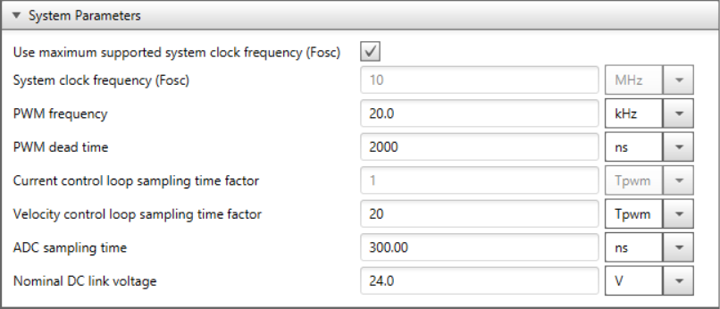
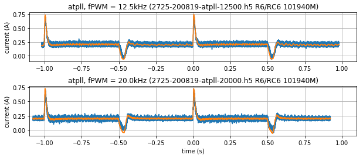
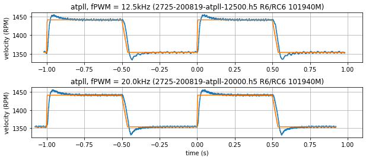

6.4. 采样率与 PWM 频率的影响¶
自 MCAF R6起，可通过 motorBench® Development Suite 的 Configure 页面支持采样率和 PWM 频率的更改。在 MCAF R8 及更高版本中，这些设置位于 System Parameters 节下。（在 MCAF R6 和 R7 中，它们位于 Board 节下。）
图 6.3 显示了 Configure 页面的截图以及控制这些速率的三个设置：
电流控制环采样时间系数 — 控制大部分电机控制算法的执行速率，包括电流控制器、参考变换以及位置和速度估计器。
注
电流控制环每 \(N\) 个 PWM 周期执行一次，其中 \(N\) 为电流控制环采样时间系数。MCAF R8 不支持修改此参数。
速度控制环采样时间系数 — 控制速度控制器的执行速率
注
速度控制环每 \(N\) 次电流控制环更新执行一次，其中 \(N\) 为速度控制环采样时间系数。
PWM 频率 — 控制 PWM 开关频率 \(f_{\text{PWM}}\)
例如，如果 PWM 频率为 50 kHz，电流环采样时间系数为 2，速度环采样时间系数为 10，则电流环将以 25 kHz 更新，速度环以 2.5 kHz 更新。

图 6.3 系统参数¶
6.4.1. 更改采样率和 PWM 频率的影响¶
更改采样率或 PWM 频率会对系统设计产生一些影响。在大多数情况下，MCAF 的运行与这些选择无关；生成代码中的某些参数将具有取决于采样率和 PWM 频率的不同缩放因子，但净结果大致相同。motorBench® Development Suite 的自动整定功能将产生大致相同的电流环和速度环带宽。
6.4.1.1. PWM 频率¶
纹波电流幅值 — 纹波电流幅值与 \(VT\over L\)成正比，因此一般来说纹波电流与 PWM 周期成正比，降低 PWM 频率将增加 PWM 频率谐波处的纹波电流幅值。
死区失真 — 提高 PWM 频率会使死区时间占 PWM 周期的比例更大。这不仅增加了死区失真，还降低了电压的有效利用率，因为在相同死区时间下，较高的 PWM 频率会导致最大占空比降低、最小占空比增加。
开关损耗 — 每个 PWM 周期的开关损耗能量 \(E_{sw}\) 取决于导通和关断期间的开关速度以及开关电压和电流。开关损耗中耗散的功率等于 \(f_{\text{PWM}} \times E_{sw}\)，因此提高开关频率会导致更高的开关功率耗散。
6.4.1.2. 采样率¶
CPU 使用率 — MCAF 在固件中每次控制环更新运行大部分电机控制计算，因此提高采样率需要更高的 CPU 使用率。
电流环增益和带宽 — 电流环增益（工程单位： \(K_{ip}\) 单位为 V/A， \(K_{ii}\) 单位为 V/As）会因采样延迟的影响而略有变化。这在激进（高带宽）电流环中最为明显，提高采样率会降低从输入采样到输出更新的延迟，并允许更快的电流环带宽。如果电流环带宽较低（低于 \(f_{\text{PWM}}/50\)），采样率的变化通常不明显。
速度环增益和带宽 — 速度环增益受类似影响；提高速度采样率将允许更快的速度环最大带宽，但如果速度环带宽较低则影响不大。此外，由于速度控制环级联在电流环之外，激进的速度环将受电流环带宽限制。
诊断内核 — 诊断内核与电流控制环在同一 ISR 中运行，因此提高采样率将增加向主机 PC 报告数据的速率，并增加通信带宽需求。
6.4.1.3. 补偿参数¶
生成代码中的若干参数将补偿 PWM 频率和采样率的变化。（整定增益和 自定义应用参数 始终以归一化无单位值或工程单位给出，与采样时间和 PWM 频率无关，但根据可能依赖于采样时间或 PWM 频率的缩放因子转换为定点表示。）
时间延迟
压摆率、斜坡率和加速度
积分器增益
6.4.2. 实现说明¶
6.4.2.1. 版本特定信息¶
R1–R5 仅支持 20 kHz 的固定采样率和 PWM 频率。某些增益和其他参数在计算时假设此频率。
R6 增加了设置 PWM 频率的灵活性，采样率锁定为 PWM 频率。（见 限制 节。）
如果使用 MCC Melody（dsPIC33C 器件的 MCAF R7），在 motorBench® Development Suite 的 Customize 页面中设置 PWM 频率将自动设置 Melody 生成代码中的外设寄存器。
如果使用 MCC Classic（所有器件的 MCAF R6，或 dsPIC33E 器件的 MCAF R7），motorBench® Development Suite 中设置的 PWM 频率必须与 MCC 中选择的 PWM 频率一致。
R7 增加了算法相关的 PWM 模式，参见 PWM 更新选项 以获取更多详情。
6.4.2.2. 限制¶
在 MCAF R6–R9 中，采样率必须锁定为 PWM 频率的特定比例：
电流采样时间 \(T_{s,I}\) 必须等于 PWM 周期，使大部分电机控制算法以 PWM 频率运行（\(f_{\text{PWM}} \times T_{s,I} = 1\)）
速度采样时间 \(T_{s,\omega}\) 必须等于 PWM 周期的 20 倍，使速度控制器每 20 个 PWM 周期运行一次（\(f_{\text{PWM}} \times T_{s,\omega} = 20\)）
这些限制将在未来版本的 MCAF 中移除。
6.4.3. 测试¶
MCAF R6 代码在多个 PWM 频率下进行了测试（电流采样率锁定为 PWM 频率，速度采样率锁定为 1/20 PWM 频率，遵循上述限制）：
12.5kHz、20kHz 和 25kHz，用于确认 dsPIC33EP256MC506 和 dsPIC33CK256MP508 上的时序和 CPU 使用率
10kHz、12.5kHz、16kHz 和 20kHz，用于验证整定与 PWM 频率和电流环采样率的一般独立性
12.5kHz 和 20kHz，用于详细验证阶跃响应和估计器独立性，涵盖所有三种 位置和速度估计器 （ATPLL， PLL， 正交编码器）在 dsPIC33CK256MP508 上
阶跃响应测试使用 测试框架 添加 方波扰动 到速度指令，并记录速度和电流。 图 6.4 和 图 6.5 显示了 ATPLL 的电流和速度阶跃响应，分别在 12.5kHz 和 20kHz PWM 频率下记录。注意，这些情况之间的阶跃响应变化很小，符合预期。

图 6.4 电流对速度指令变化的阶跃响应（橙色 = q 轴电流指令，蓝色 = q 轴电流）¶

图 6.5 速度对速度指令变化的阶跃响应（橙色 = 速度指令，蓝色 = 估计速度）¶